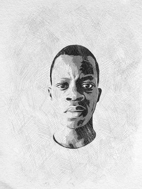
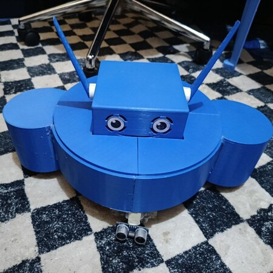
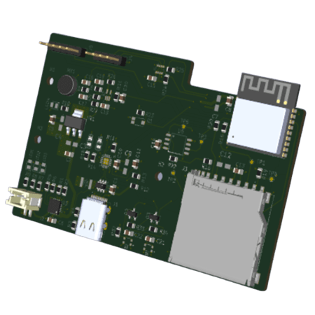
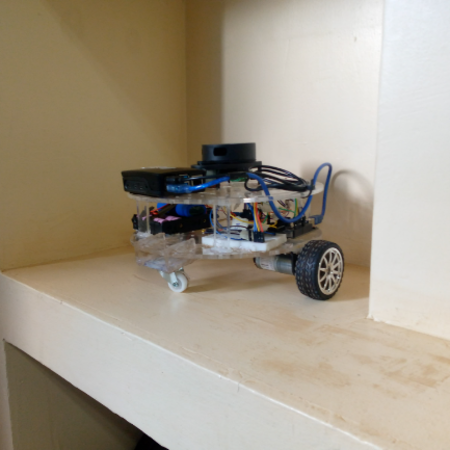
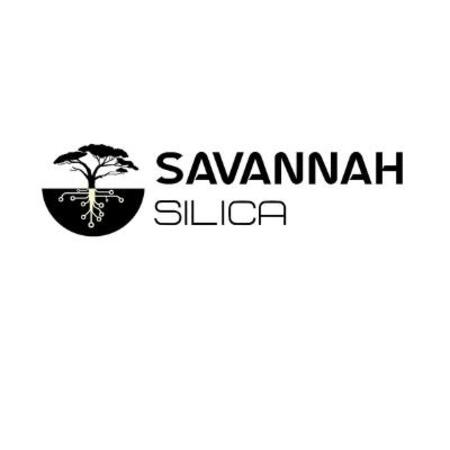
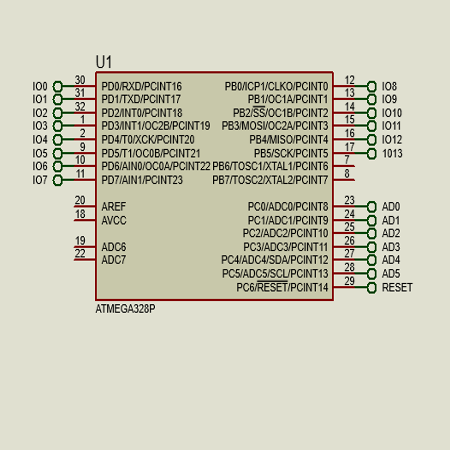
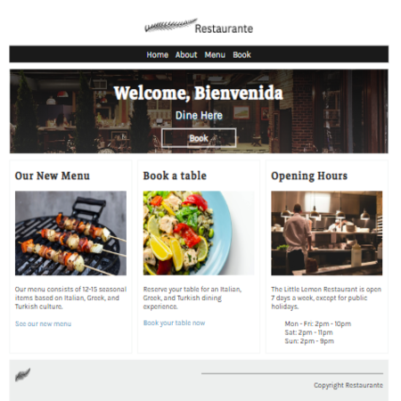
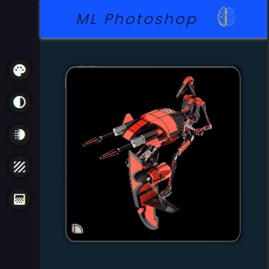
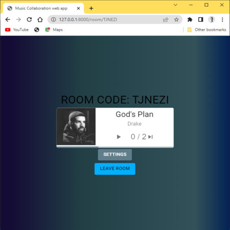
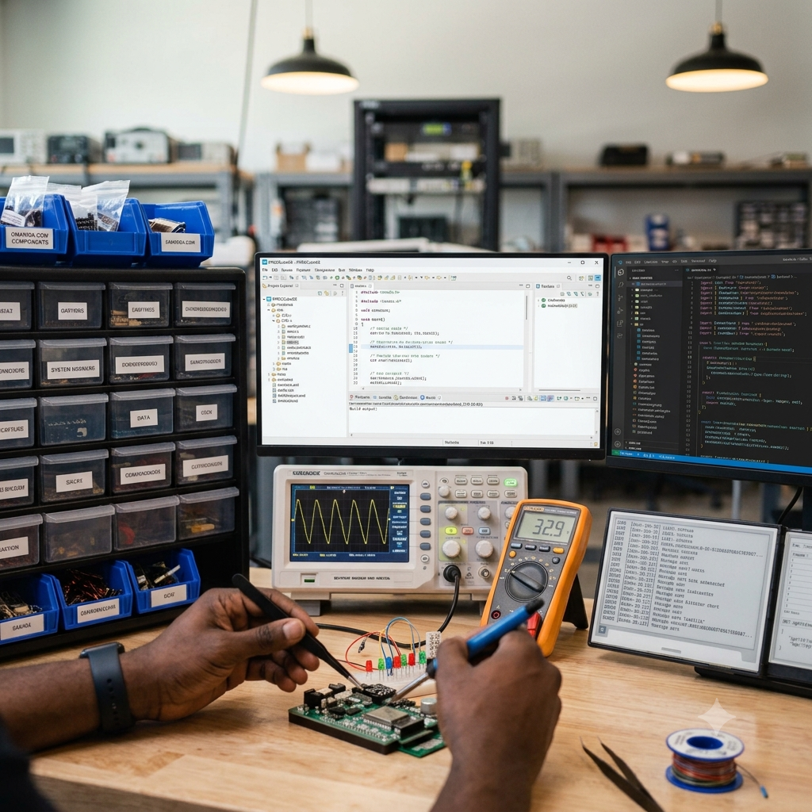

I specialize in designing embedded systems, and can also work on the back-ends that bring them to life, from silicon-level bring-up to IoT telemetry streaming.

A selection of some of the hardware and software systems I've designed and prototyped, physical, digital, and everything between.

Smart Learning Toy Car Robot AI voice-controlled robot car built on a Raspberry Pi 4 with a reSpeaker mic HAT, driven from a custom web app and Bluetooth companion app. 02
ESP32 IoT 4-Layer PCB Production-style board with RF-aware layout, battery backup, and SD data logging. 03
Autonomous Mobile Robot ROS2 robot with LiDAR SLAM and autonomous navigation, built with Team R.O.O.K. Droid. 04
Savannah Silica Backend Open-source Django backend with clean REST APIs. 05
Microcontroller Programming Bare-metal AVR work, C, C++, assembly, ATmega328P, and Proteus simulations. 06
Restaurant Web App Full-stack restaurant platform with DRF API, JWT auth, and a live deployment. 07
ML PhotoShop Web App Client-side image laboratory using JavaScript and OpenCV.js for filters and edge detection. 08
Spotify Music Rooms React + Django app that synchronizes Spotify listening sessions inside shared rooms.Close to the hardware, comfortable in the cloud, and comfortable bridging the two.
Firmware-first embedded design and multi-platform hardware development across MCU, MPU, and SoC architectures, schematics, power design, layout, and bring-up.
I work close to the hardware, where performance, power, and reliability decisions are made at the system level.
Beyond the device layer, back-ends that support IoT deployments: device communication, telemetry ingestion, observability, and scalable cloud integration.
My aim: extend edge devices through reliable data flow, remote management, and system visibility.

I specialize in hardware–software system integration, with embedded systems as my core specialization. I pair it with back-end development to build applications that enhance and extend what the hardware can do.
From reading a datasheet to shipping a REST API, I follow the full current, between a trace on a PCB and a packet in the cloud.
Designing, prototyping, and testing embedded systems for water and energy solutions while collaborating with multidisciplinary teams.
I also work on back-end infrastructure for user-facing applications that enable remote monitoring and control of systems plus contribute to technical documentation, field testing, and continuous improvement of deployed solutions.
Completed a long-term back-end development contract (Sep 2023 – Mar 2025) with a 5.0–star client rating.
Provided freelance software development services for startups and small businesses.
Built scalable APIs, designed databases and worked with, plus implemented machine learning models.
Successfully launched 3 model rockets powered by fully tested K class solid rocket motors.
I was part of the rocket propulsion team developing and testing a K class solid rocket motor.
Designed motor parts based on simulation values & machined them, designed remote testing & ignition circuitry, programmed microcontrollers for remote ignition & data collection, and analyzed collected data.